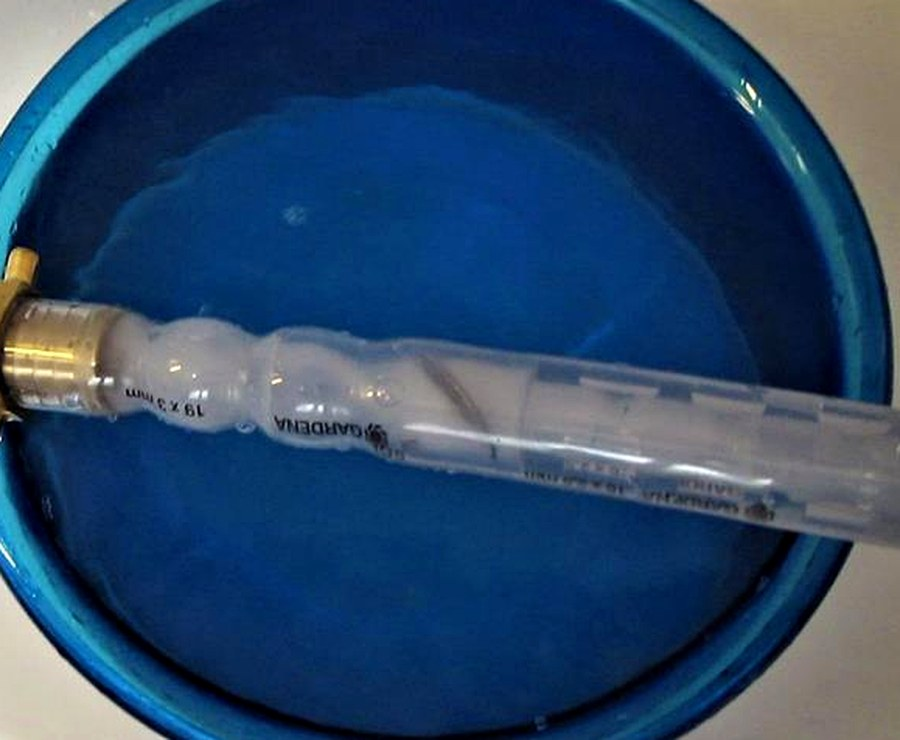

Neljä referenssiä, ei adjektiiveja.
Jokainen case noudattaa samaa runkoa: lähtötilanne, mitä asennettiin, mitatut tulokset ja mitä siitä seuraa. Niiden alla kolmetoista raporttia kentältä, 2024–2026.
Kuopio — lääkejäämät
poistettu 0,7 sekunnissa. IWA:n julkaisema koe, aine aineelta.
Juomavesi · FilippiinitRadon kuudella asemalla
kolmekymmentä kertaa Suomen rajaa tiukempi — täytetty Unique Waterin kanssa.
Vesiviljely · SuomiCarelian Caviar — otsoni
täyteen liukenemiseen toimivassa sampilaitoksessa.
Luonnonvedet · IntiaSukhralin lampi
kuollut lampi elvytetty ja pidetään puhtaana sopimuksella.
Kentältä — uutisvirta

Lääkejäämät
2026-03-11
EU:n uudistettu jätevesidirektiivi tekee mikropollutanttien poistosta pakollista — ja lääke- ja kosmetiikkateollisuus maksaa vähintään 80 % kustannuksista. Julkaistu Kuopion koe on mitattu vastauksemme: yksittäisistä jäämistä poistui jopa 99,9 % 0,7 sekunnissa.

Taas yksi lampi pelastettavana — järvi- ja lampi-ilmastus toiminnassa
2026-01-19
Seuraava lampi käsittelyyn: sama putkilinjailmastus jota käytettiin Sukhralissa, nyt uudessa vesistössä.

SansOx mukana SFP-25 by Sweden -tapahtumassa Bangladeshissa ja Pakistanissa
2025-10-20
SansOx esitteli tekstiilivesiratkaisunsa SFP-25 by Sweden -tapahtumassa ja tapasi brändejä ja valmistajia Bangladeshissa ja Pakistanissa.

Puhdistamokiertue jatkuu Bangladeshista Pakistaniin
2025-10-10
Puhdistamokiertue jatkui Bangladeshista Pakistaniin: värjäämöjen jätevedet ja nollapäästötavoitteet paikan päällä.

SansOx yhdistää voimansa kumppanien kanssa Bangladeshin tekstiilimarkkinoilla
2025-06-26
Yhteisyrityksestä allekirjoitettiin aiesopimus Charmin ja Colormatchin kanssa värijäämien poistoon Bangladeshin tekstiilimarkkinoilla — DTG 2025 -messuilla esiteltyjen tulosten jälkeen.

Pohjoismaiset yritykset Sustainable Fashion Platformilla Bangladeshissa
2025-02-26
SansOx liittyi muiden pohjoismaisten yritysten joukkoon Sustainable Fashion Platformilla — työtä tukevat ostajat kuten H&M, IKEA ja Lindex.

Kuulumisia Sukhralista
2025-02-26
Kuulumiset Sukhralin lammelta: kunnostus jatkuu, mukana MICADA, India National Water Foundation, Gurugramin kaupunki ja Suomen suurlähetystö.
SansOxin ratkaisu estää lääkejäämien päätymisen Itämereen
2024-12-05
Miten OxTube-otsonikäsittely voi estää lääkejäämien — arviolta 1,8 miljoonaa kiloa vuodessa — päätymisen Itämereen.

SansOx esitteli uusimman järvenkunnostushankkeen Intiassa
2024-10-04
Uusin järvenkunnostushanke Intiassa esiteltiin: ilmastus ensimmäisenä askeleena rehevöityneen järven elvyttämisessä.

SansOx Mikkelin vesiviikolla
2024-10-04
Ratkaisut esillä Mikkelin vesiviikolla, mukana patentoitu ClariOx-kirkastuskokoonpano.
Kumppaneineen tämän vuoden Baltic Sea Projectin voittaja
2024-04-29
Salon kaupungin, THL:n ja Savonia-ammattikorkeakoulun kanssa SansOx voitti tämänvuotisen Baltic Sea Projectin: lääkejäämien ja mikrobien poisto otsonilla.
Järvihanke Sadpuran kylässä Haryanan osavaltiossa
2024-04-18
Uusi järvihanke alkaa Sadpuran kylässä Haryanan osavaltiossa — Intian hankkeet laajenevat Gurugramin ulkopuolelle.
SansOx pohjoiskarjalaisessa Karjalaisessa
2024-04-18
Karjalainen esittelee SansOxin: yli 100 asennusta noin 20 maassa.
30 minuuttia, teknistä, maksutta
Pyydä minkä tahansa casen mittausdata tältä sivulta — käydään se läpi yhdessä.